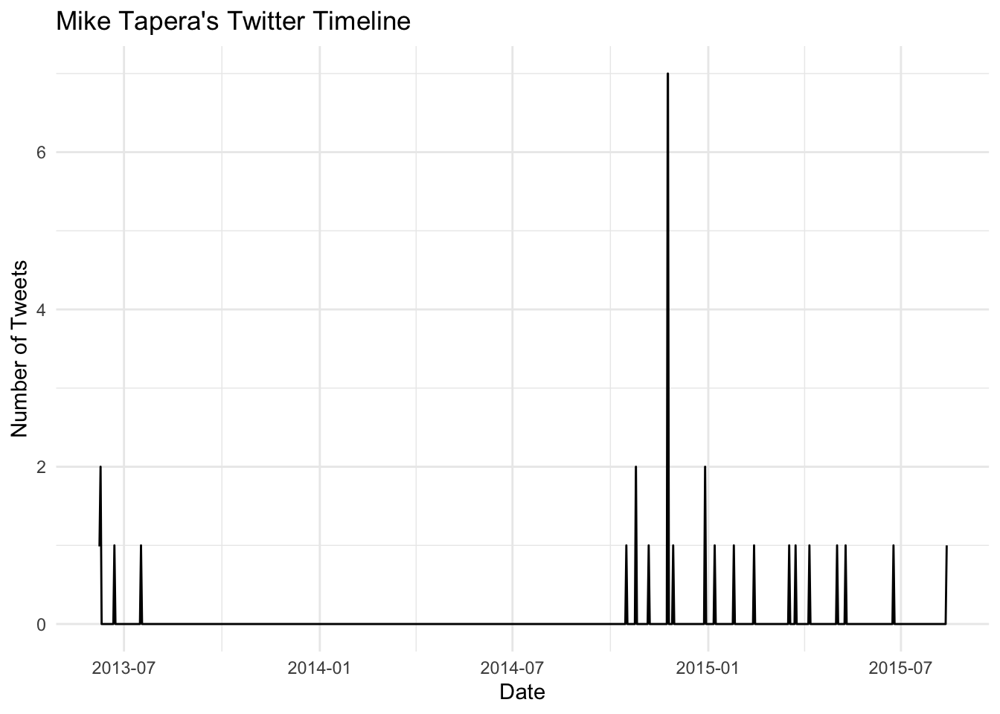
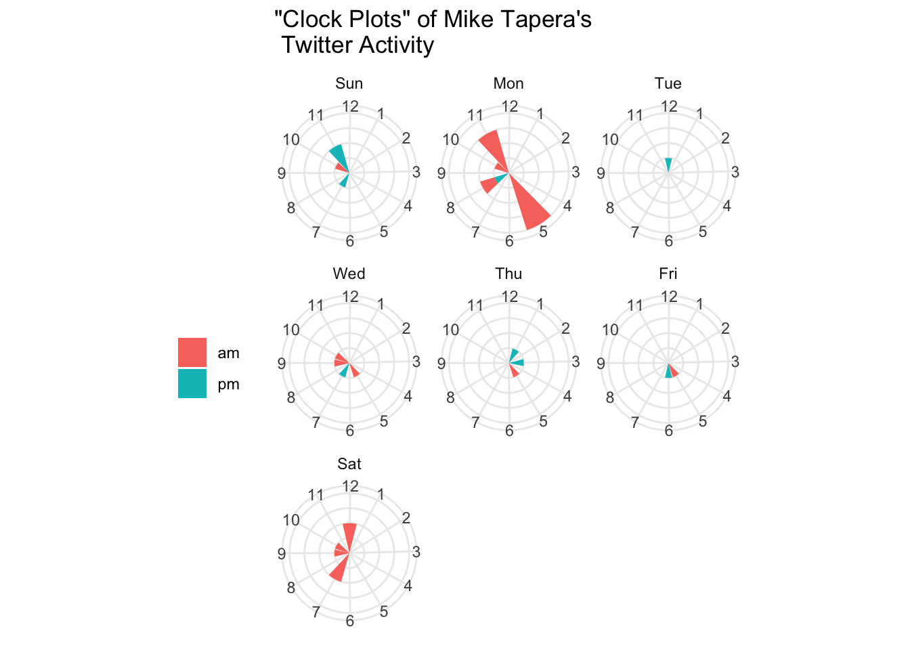
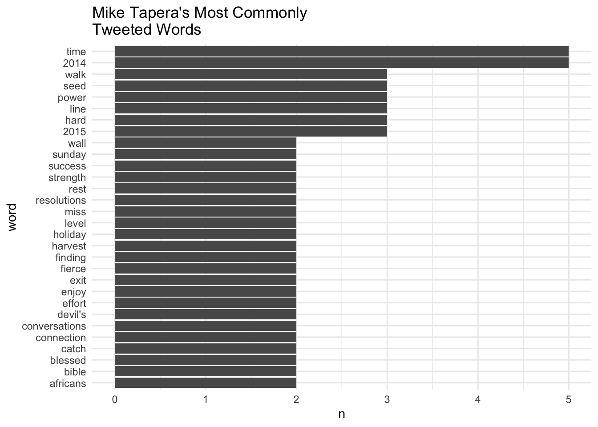
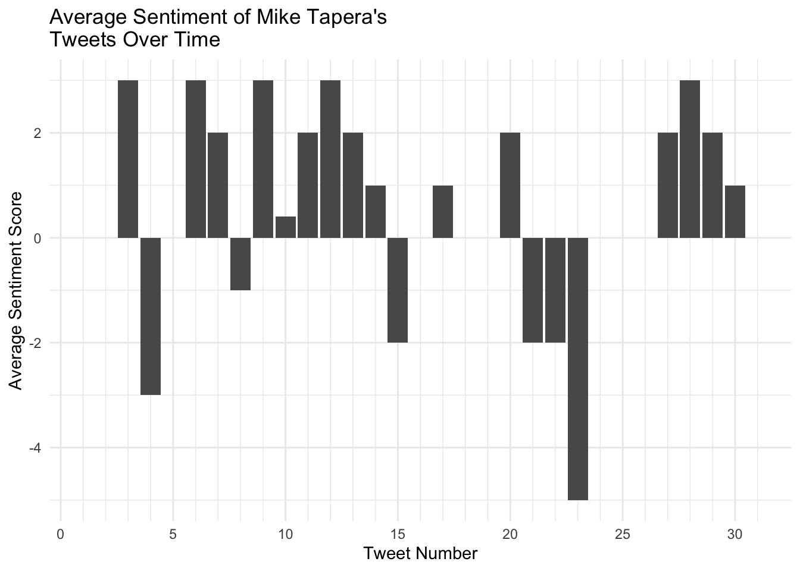
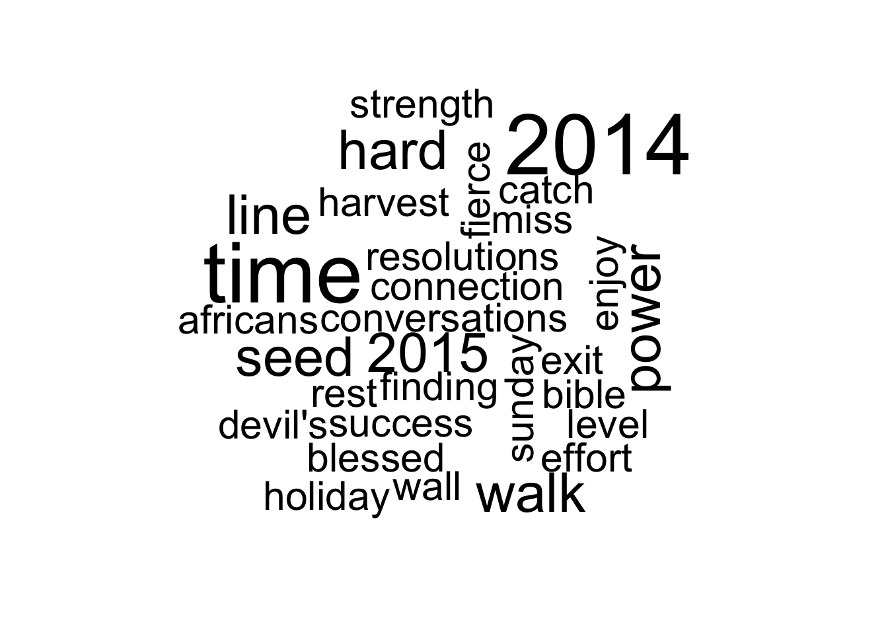

#install.packages("rtweet")
library(rtweet)
library(tidyverse) #include for tidy R programming
library(plotly) #graphing
library(lubridate) #working with date times
library(tidytext) #text mining stuff
library(wordcloud) #a wordcloud, duh
library(knitr) #tables
library(kableExtra)rtweet package. The hype train has certainly left the station, but I thought it was about time I checked out what all the fuss was about before I became completely out of touch, so let’s get down to it!
Tweets In Moratorium
My father Michael Tapera passed away from a brain tumour in 2016; although he will be sorely missed, it’s fortunate that my father was famous for his written and spoken word. He was an excellent writer and orator in just about every way, and a few days ago my mom suggested to our family to check his Twitter page for the 30 or so tweets he posted in his latter years (his diagnosis was received in 2013, and so all of these tweets were during his ailment).
Of course, being the data scientist I am, simply reading the tweets would not suffice: I decided to do some text mining on my dad’s Twitter profile to find out what his online presence was like in his latter days.
Setting Up
Loading rtweet is really easy through CRAN, and setting up the Twitter API connection is similarly simple; see this page for a how-to.
Now that we’ve set up, we use rtweet’s handy functions to grab our data:
auth_as("default")Reading auth from '/Users/tinashemtapera/Library/Preferences/org.R-project.R/R/
rtweet/default.rds'Sys.setenv(TZ="America_New_York")
tweets = get_timeline(c("MtaperaTapera"))Warning in strptime(x, fmt, tz = "GMT"): unknown timezone 'America_New_York'Warning in strptime(x, format, tz = tz): unknown timezone 'America_New_York'Analysis and Visualisation
We can plot a general visualisation of dad’s Twitter activity.
tweets%>%
select(created_at)%>%
ts_plot("days")+
theme_minimal()+
labs(title="Mike Tapera's Twitter Timeline", y="Number of Tweets", x = "Date")Warning in as.POSIXlt.POSIXct(x, tz = tz): unknown timezone 'America_New_York'Warning in format.POSIXlt(as.POSIXlt(x, tz), format, usetz, ...): unknown
timezone 'America_New_York'Warning in as.POSIXlt.POSIXct(x): unknown timezone 'America_New_York'Warning in format.POSIXlt(as.POSIXlt(x, tz), format, usetz, ...): unknown
timezone 'America_New_York'
It looks like dad probably started tweeting around the time of his operation, and took a hiatus probably around his first surgery. His activity probably picked up again once he was back on his feet.
We can also see what day of the week or hour of day was most popular for his Twitter activity:
tweets%>%
select(created_at)%>%
mutate(hour_of_day = hour(created_at),
day_of_week = wday(created_at, label = TRUE),
day_or_night = ifelse(hour_of_day > 11, "pm", "am"))%>%
mutate(hour_of_day = ifelse(hour_of_day < 1, 12,
ifelse(hour_of_day > 12, hour_of_day-12, hour_of_day)))%>%
count(hour_of_day, day_of_week, day_or_night)%>%
ggplot(aes(x=hour_of_day, y=n))+
geom_bar(aes(fill = day_or_night),stat="identity")+
facet_wrap(~day_of_week)+
coord_polar(start=0.25)+
theme_minimal()+
scale_x_continuous(breaks = 1:12,minor_breaks = NULL)+
theme(axis.title.y=element_blank(),
axis.text.y=element_blank(),
axis.ticks.y=element_blank(),
axis.title.x=element_blank(),
legend.position = "left",
legend.title = element_blank())+
labs(title="\"Clock Plots\" of Mike Tapera's\n Twitter Activity")Warning in as.POSIXlt.POSIXct(x, tz): unknown timezone 'America_New_York'Warning in format.POSIXlt(as.POSIXlt(x, tz), format, usetz, ...): unknown
timezone 'America_New_York'Warning in as.POSIXlt.POSIXct(x, tz = tz(x)): unknown timezone
'America_New_York'
I call these clock plots — the length of the bar on the clock shows how many tweets dad sent during that hour of day, while the colour differentiates between AM or PM[1]. It’s interesting, though not unexpected, that dad used to tweet the most at 5AM on a Monday morning — members of the Tapera household are surely familiar with how dad used to get us up early to do Bible readings and devotions, or have some family time to encourage us. After my older brother and I left home, it’s not unusual that he started sharing his early morning/start of the week encouragements with the Twitterverse.
What Did He Tweet About?
Of course, it’d also be nice to get an overview of what dad used to Tweet about. We can do some simple text mining on his Twitter feed to find out, using the tidytext package.
#create a dataframe to work with
text_df = data.frame(tweet = 1:nrow(tweets), date = date(tweets$created_at), text = tweets$text, stringsAsFactors = FALSE)Warning in as.POSIXlt.POSIXct(x, tz = tz(x)): unknown timezone
'America_New_York'#tokenise
tidy_tweets = text_df%>%
unnest_tokens(word, text)
#remove stop words (functional words with no contextual importance)
data(stop_words)
tidy_tweets = tidy_tweets %>%
anti_join(stop_words)Now let’s visualise what words he used most in his Twitter:
tidy_tweets%>%
count(word)%>%
filter(n>1)%>%
mutate(word = reorder(word, n)) %>%
ggplot(aes(word, n)) +
geom_col()+
coord_flip()+
theme_minimal()+
labs(title="Mike Tapera's Most Commonly\nTweeted Words")
For those who knew my dad, you can very clearly hear him mentioning a lot of these words quite often in formal conversation. My dad was not only a successful accountant, but he was also a pastor, family counselor, and public speaker. These words reflect those duties quite well.
Sentiment Analysis
Another interesting analysis is that of sentiment, which can tell us a general idea of the emotions within of a body of text. Thanks to the tidytext package, this is also relatively easy to do with dad’s tweets.
The NRC Lexicon is an extremely useful dataset in which the authors assigned a plethora of words to 1 (or more) of 8 fundamental human emotions: anger, fear, anticipation, trust, surprise, sadness, joy, and disgust. Using this lexicon, we can filter our Twitter tokens to find out which of these emotions dad tweeted about most (with some overlap, of course).
nrc = get_sentiments("nrc")
tidy_tweets%>%
inner_join(nrc)%>%
filter(sentiment != "negative" & sentiment != "positive")%>%
count(sentiment, sort = TRUE)%>%
kable()%>%
kable_styling()| sentiment | n |
|---|---|
| trust | 21 |
| anticipation | 20 |
| joy | 20 |
| fear | 12 |
| surprise | 5 |
| anger | 4 |
| sadness | 4 |
| disgust | 3 |
With some overlap, we can see that dad tweeted most with trust, anticipation, and joy words. Encouraging 😊, but some words can belong to different sentiment categories (e.g. “guard” is categorised under both fear, and trust). Instead, we can go with the positive/negative 5-scale score of the AFINN lexicon, to give us sentiment scores of each available word, and then average these scores for each tweet.
afinn = get_sentiments("afinn")
tidy_tweets%>%
inner_join(afinn)%>%
group_by(tweet)%>%
mutate(score = value) %>%
mutate(sentiment = mean(score))%>%
select(-c(one_of("word", "score")))%>%
distinct()%>%
ggplot(aes(x=tweet, y=sentiment))+
geom_bar(stat = "identity")+
theme_minimal()+
labs(title="Average Sentiment of Mike Tapera's\nTweets Over Time",
x = "Tweet Number",
y = "Average Sentiment Score")+
scale_x_continuous(limits = c(1,31), breaks = seq(0,30,5), minor_breaks = 1:31)
It’s great to see that on Twitter, dad was rarely negative and had positive things to say even towards the end of his life when facing the ominousness of brain cancer.
Obligatory Word Cloud
No Twitter text mining exercise is complete without a word cloud, although in my opinion they are often quite useless[2].
tidy_tweets%>%
count(word)%>%
with(., (wordcloud(word, n, max.words = 100,min.freq = 2)))
NULLConclusion
A few small takeaways are that we’re reminded how driven dad was by early mornings and motivating others at the start of the week. We also got to see what words he was using commonly online as well as the general sentiment of his tweets over time.
Dad: Although it was a tragedy to lose you, especially before I could graduate and show you all the skills and expertise I developed in university, I know you were always proud of me and that you loved me and our family very much. This is the first and most important thing I wanted to do with my time after graduation, and I hope it’s befitting. We love you and miss you dad.
[1] It’s important not to use polar coordinate plots in scientific settings, due to their hendency to be misperceived. See this source for more.
[2] Wordclouds suck; see this source for more.